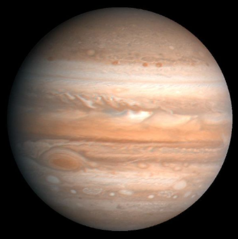

Júpiter
Es un planeta giganteco: su tamaño es 1300 veces mayor que la Tierra. Tiene muchos satélites naturales y los más importantes son Io,Europa,Ganímedes y Calisto.
Su nombre es en honor a Júpiter, el dios más importante de la mitologia romana.
